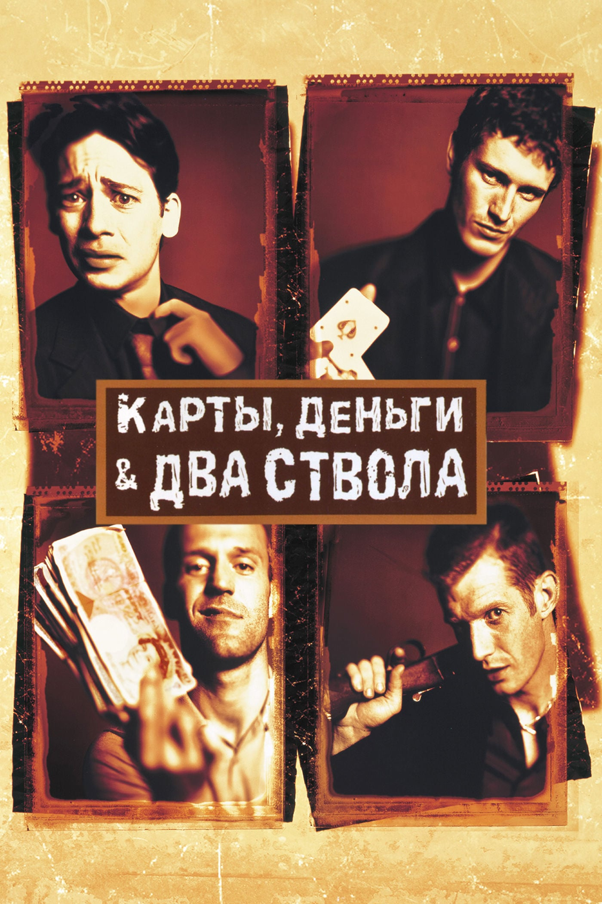
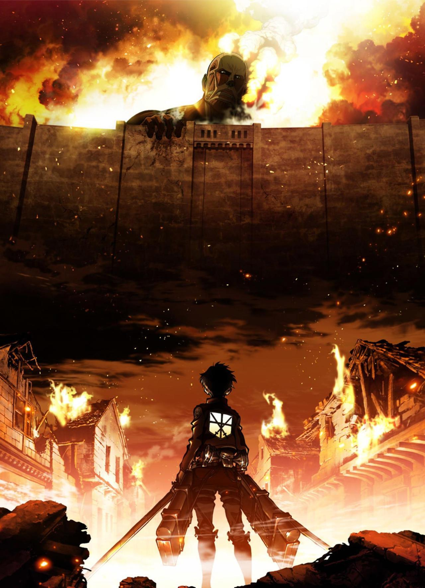
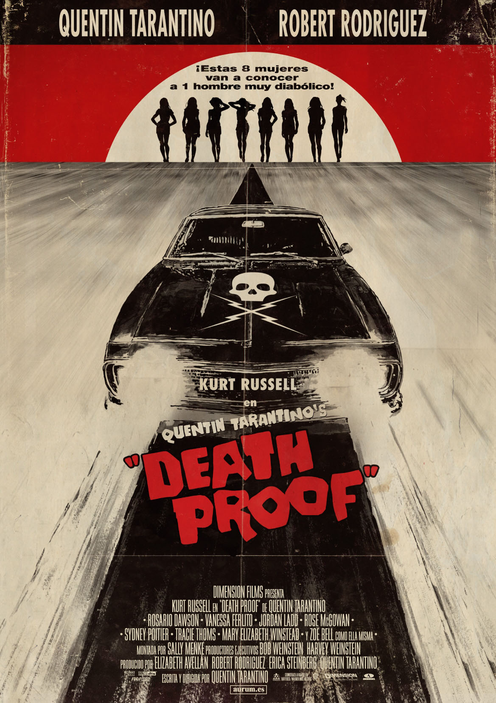
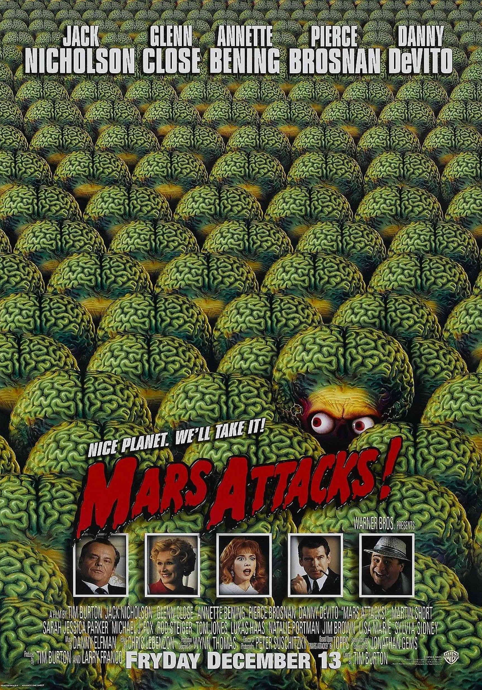

Nous sommes en l'an 2035. Les quelques milliers d'habitants qui restent sur notre planète sont contraints de vivre sous terre. La surface du globe est devenue inhabitable à la suite d'un virus ayant décimé 99% de la population. Les survivants mettent tous leurs espoirs dans un voyage à travers le temps pour découvrir les causes de la catastrophe et la prévenir. C'est James Cole, hanté depuis des années par une image incompréhensible, qui est désigné pour cette mission.
[Critique] L'armée des 12 singes (1996)
Thriller / Publié le 30 juin
2018 / Michel Vaillant

Eddy, un joueur invétéré, s'apprête à participer à la plus grosse partie de cartes de sa vie avec un enjeu de cent mille livres, somme qu'il a durement amassée avec ses trois acolytes, Tom, Bacon et Soap. Eddy est considéré comme l'un des meilleurs joueurs du circuit, mais la partie s'avère être un coup monté à l'issue duquel il doit cinq cent mille livres à son adversaire Hatchet Harry. Ce dernier lui donne une semaine pour réunir cette somme, sinon il aura les doigts coupés. Seul JD, le père d'Eddy, pourrait annuler la dette en cédant son bar à son vieux rival, Harry.
[Critique] Arnaques, Crimes et Botanique (1998)
Policier / Publié le 26 juin
2018 / Michel Vaillant

Réfugiés dans une ville fortifiée, les survivants de l'humanité tentent d'échapper aux titans qui les dévorent. Jusqu'au jour où un titan colossal apparaît.
[Critique] L'Attaque des Titans - Saison 1
Dessin animés / Publié le 15
juin 2018 / Michel Vaillant

C'est à la tombée du jour que Jungle Julia, la DJ la plus sexy d'Austin, peut enfin se détendre avec ses meilleures copines, Shanna et Arlene. Ce TRIO INFERNAL, qui vit la nuit, attire les regards dans tous les bars et dancings du Texas. Mais l'attention dont ces trois jeunes femmes sont l'objet n'est pas forcément innocente. C'est ainsi que Mike, cascadeur au visage balafré et inquiétant, est sur leurs traces, tapi dans sa voiture indestructible. Tandis que Julia et ses copines sirotent leurs bières, Mike fait vrombir le moteur de son bolide menacant...
[Critique] Boulevard De La Mort
Thriller / Publié le 4 juin
2018 / Michel Vaillant

Donnie Darko est un adolescent de seize ans pas comme les autres. Intelligent et doté d'une grande imagination, il a pour ami Frank, une créature que lui seul peut voir et entendre. Lorsque Donnie survit par miracle à un accident, Frank lui propose un étrange marché. La fin du monde approche et ce dernier doit accomplir sa destinée. Des événements bizarres surviennent dans la petite ville tranquille, mais Donnie sait que derrière tout cela se cachent d'inavouables secrets. Frank l'aidera à les mettre à jour, semant ainsi le trouble au sein de la communauté.
[Critique] Donnie Darko
Drame / Publié le 28 mai 2018
/ Michel Vaillant

Effervescence sur la planète Terre. Les petits bonshommes verts ont enfin décidé de nous rendre visite. Ils sont sur le point d'atterrir dans leurs rutilantes soucoupes. La fièvre des grands jours s'empare de l'Amerique dans une comédie de science-fiction nostalgique des années cinquante.
[Critique] Mars Attacks!
Science fiction / Publié le 20
mai 2018 / Michel Vaillant
Nous sommes en l'an 2035. Les quelques milliers d'habitants qui restent sur notre planète sont contraints de vivre sous terre. La surface du globe est devenue inhabitable à la suite d'un virus ayant décimé 99% de la population. Les survivants mettent tous leurs espoirs dans un voyage à travers le temps pour découvrir les causes de la catastrophe et la prévenir. C'est James Cole, hanté depuis des années par une image incompréhensible, qui est désigné pour cette mission.
[Critique] L'armée des 12 singes (1996)
Thriller / Publié le 30
juin 2018 / Michel Vaillant
Eddy, un joueur invétéré, s'apprête à participer à la plus grosse partie de cartes de sa vie avec un enjeu de cent mille livres, somme qu'il a durement amassée avec ses trois acolytes, Tom, Bacon et Soap. Eddy est considéré comme l'un des meilleurs joueurs du circuit, mais la partie s'avère être un coup monté à l'issue duquel il doit cinq cent mille livres à son adversaire Hatchet Harry. Ce dernier lui donne une semaine pour réunir cette somme, sinon il aura les doigts coupés. Seul JD, le père d'Eddy, pourrait annuler la dette en cédant son bar à son vieux rival, Harry.
[Critique] Arnaques, Crimes et Botanique (1998)
Policier / Publié le 26
juin 2018 / Michel Vaillant
Réfugiés dans une ville fortifiée, les survivants de l'humanité tentent d'échapper aux titans qui les dévorent. Jusqu'au jour où un titan colossal apparaît.
[Critique] L'Attaque des Titans - Saison 1
Dessin animés / Publié le
15 juin 2018 / Michel Vaillant
C'est à la tombée du jour que Jungle Julia, la DJ la plus sexy d'Austin, peut enfin se détendre avec ses meilleures copines, Shanna et Arlene. Ce TRIO INFERNAL, qui vit la nuit, attire les regards dans tous les bars et dancings du Texas. Mais l'attention dont ces trois jeunes femmes sont l'objet n'est pas forcément innocente. C'est ainsi que Mike, cascadeur au visage balafré et inquiétant, est sur leurs traces, tapi dans sa voiture indestructible. Tandis que Julia et ses copines sirotent leurs bières, Mike fait vrombir le moteur de son bolide menacant...
[Critique] Boulevard De La Mort
Thriller / Publié le 4
juin 2018 / Michel Vaillant
Donnie Darko est un adolescent de seize ans pas comme les autres. Intelligent et doté d'une grande imagination, il a pour ami Frank, une créature que lui seul peut voir et entendre. Lorsque Donnie survit par miracle à un accident, Frank lui propose un étrange marché. La fin du monde approche et ce dernier doit accomplir sa destinée. Des événements bizarres surviennent dans la petite ville tranquille, mais Donnie sait que derrière tout cela se cachent d'inavouables secrets. Frank l'aidera à les mettre à jour, semant ainsi le trouble au sein de la communauté.
[Critique] Donnie Darko
Drame / Publié le 28 mai
2018 / Michel Vaillant
Effervescence sur la planète Terre. Les petits bonshommes verts ont enfin décidé de nous rendre visite. Ils sont sur le point d'atterrir dans leurs rutilantes soucoupes. La fièvre des grands jours s'empare de l'Amerique dans une comédie de science-fiction nostalgique des années cinquante.
[Critique] Mars Attacks!
Science fiction / Publié
le 20 mai 2018 / Michel Vaillant
Fin des articles